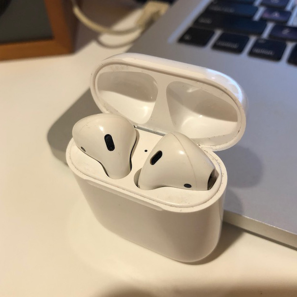

AirPods
Published 2020-10-04

It makes me feel like a bit of an Apple fanboy to praise these things so much, but man. These may be my favorite gadget I’ve ever bought. I wasn’t on the AirPod hype train to start with—I ended up buying these ones slightly used from a friend just to try them out, and they have become indispensable.
- The case is so small and contoured, I don’t notice them in my pocket. I often forget they’re there, or have a monent of panic looking for them. But because of that, it’s so easy to have them with me all the time.
- They’re so quick to pull out and pop in your ear. Quick enough that it’s easy to answer an incoming call before it goes to voicemail.
- They stay in well enough for jogging and working out. I’ve never had one fall out.
- I’m often amazed by the range, compared to other Bluetooth devices I’ve had. It’s no problem to leave my phone plugged in charging while wearing my AirPods around the house.
- Siri + AirPods works remarkably well for responding to texts without taking my phone out of my pocket—usually.